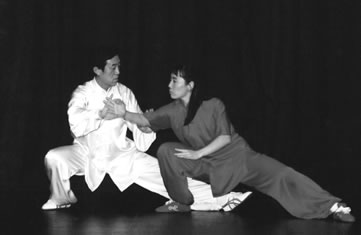
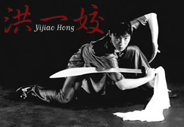

MISSION STATEMENTThe Chinese Wushu and Tai Chi Academy’s mission is to improve and develop personal internal (mind, spirit), and external (physical) health abilities; foster overall excellence, and contribute to an understanding of Eastern culture. And, importantly, encourage and promote Wushu and Tai Chi Talent and Spirit.Rules of Chinese Wushu & Tai-chi Academy
SCHOOL OPERATIONThe school year is divided into four semesters with 10 weeks in each semester. Class size is properly set to emphasize the key, which is individualized instruction. The classes are carefully divided by levels to help the student learn and advance with step-by-step instruction. At each academic level, the school emphasizes fundamental discipline, instructor professional standards, with inspiration and an encouraging teaching attitude. The school regulations are strict. The purpose for this is to refine student’s excellence, promote moral and physical growth, and develop character.
The Chinese Wushu & Tai Chi Academy was established by Master Yijiao Hong in 1996. For over a decade, CWTA has fostered thousands of students, teaching them Tai Chi and Wushu. Sifu Hong has trained students in Wushu and Tai Chi throughout the metropolitan Seattle/Tacoma area. Sifu Hong also offers seminars and workshops to Seattle area elementary schools, high schools, universities, and corporations. These include: Bush school, Lakeside school, Seattle University, Northwest Institute of Acupuncture and Oriental Medicine, Wizards of the Coast. Co-Instructor Pierce Watters offers a community service Tai Chi class for residents at the Lakeshore Retirement Home. At the First World Tai Chi Health Conference in Sanya, Heinan Island, China, in 2001, the Chinese Wushu & Tai Chi Academy Tai Chi Team including Co-Instructor Pierce Watters, was interviewed by TV stations from all over China, including Hong Kong and Shanghai. Two CWTA students brought home Tai Chi medals: Sifu Restita DeJesus with a Gold medal in Chen style, and Co-Assistant Instructor, Zachary Layng, a Silver medal in Chen style.
IN PRINTKungfu Magazine / July 1999In their all-tai chi issue, Kungfu Magazine published a feature article on Sifu Yijiao Hong, titled, Hong Yijiao’s Tai Chi Journey. China in Dance The Seattle Post-Intelligencer
FILMIn the year 2000, Sifu Hong and her students made a brief appearance in the Sylvester Stallone film, Get Carter.Shaw Brothers, the famous Hong Kong film company, shot footage of Sifu Hong and her students for promotional use in Asia. In 2004, Buster the bunny, best friend of PBS Kid’s show star Arthur, got his own series on PBS, Postcards from Buster. In one episode, Buster visits Seattle and learns Wushu and Tai Chi from Sifu Hong and her students.
EVENTSSeminarsSpecialized intensive courses offered by Master Yijiao Hong and other Masters of Chinese Martial Arts and Qigong. These courses vary in length from one hour to two days. Learn specialized techniques and applications for Wushu and the Internal Arts, including Qigong.  Demo Team ABOUT MASTER YIJIAO HONGMaster Instructor Yijiao Hong is a 12th generation disciple of Chen Style Tai Chi. She has sponsored Grandmaster Chen Zhenglei’s Chen Style Tai Chi Seminars in Seattle annually since 1998. Master Instructor Yijiao Hong’s top students include: Sifu Restita DeJesus, Sifu James Guidon, Sifu Blake Emery, Joan Laage, Craig Perras, Larry Fung, David Lion, Zach Layng, Russal Layng, Hoan Chung, Jason Hu, Mike D., Dashi Banan, Rebecca Wong, Keli brown and others. In 2000, Master Hong was certified by the International Wushu Federation in Beijing, China as a Wushu International Judge. In 2004, Master Hong earned the highest rank as a Wushu International A Grade Judge in Beijing. Between 1999 and 2003, she judged for selection of National Wushu Teams for both the U. S. A. and Canada. Master Hong was born in Jin Hua China, and started practicing Wushu with the Jin Hua Wu Shu Team when she was 8 years old. She was the top Wushu athlete and Tai Chi champion in Zhe Jiang province, China. Master Hong has a B.A. degree in physical education in Wushu and Tai Chi from Zhe Jiang Normal University, China. She became an assistant professor and team coach of Zhe Jiang College of Traditional Chinese Medicine in 1992. She coached the college Wushu and Tai Chi Team and competed in China national tournaments until she immigrated to Seattle, U.S. in 1994. Master Hong was named U.S. “Year of the Athlete“ by USAWKF in 1998, and competed on the U.S.A National Wushu Team in the 5th World Wushu championship in Hong Kong in 1999, where she ranked 7th among the top world professional Tai Chi athletes. In 1996 Master Hong established the Chinese Wushu and Tai Chi Academy in Seattle and fosters thousands of students. She offers seminars and workshops to schools and corporations nationally and internationally, including Forest Ridge, Bush School, Lakeside, Wizards of the Coast, and Microsoft Corp. in Seattle. She has also conducted workshops and seminars in New York, Baltimore, Atlanta,Chicago in U.S., Canada, South America and China. Her students have won many champions and grand-champion honors, including the First World Tai Chi and Health conference in Hainan, China in 2001, Can-Am Wushu Championships in Canada and International Wushu Championships. Her career has been featured in Kung Fu magazine, the Seattle P.I. and the Seattle Times. Master Hong and her students have also been featured in film and performance including “Postcards from Buster” on PBS, “China in Dance” 2000, “Dance This 2009” and a Shaw Brothers promotional film. Master Hong is co-author of a book on Tai Chi in Chinese, not yet translated into English. Master Hong’s passion in Tai Chi originated from her late teenage years at University, especially after she studied Chinese Medicine for two years and visited Madam Chen Lixing in Xian, China Master Hong’s strong belief in Tai Chi’s therapeutic value in life and Tai Chi’s powerful martial application is a constant source of inspiration for her. Master Hong is a lifetime student of Tai Chi Yang family from Grandmaster Fu Shengyuang and Chen family from Grandmaster Chen Zhenglei, Chen village, China. Yijiao Hong has mastered many Tai Chi forms and skills from both the traditional families as well as modern competition forms. Competition Tai Chi forms include: 24 Yang style, 32 Yang Tai Chi sword, 42 Taijiquan, 42 Taijijian, and Yang, Chen , Wu, Sun competition forms ; Traditional forms and skills include: 85 Yang family traditional form, push-hands, Chen family Tai Chi silk-reeling, old frame one, old frame two, Chen sword, Chen broadsword, push-hands and Traditional Chinese Medicial Qigong forms. Currently, Master Hong is focusing her teaching on Tai Chi. In addition, she practices Guzheng – ancient strings, and spends time with her two young children. Her former wushu students are continuing their practice of Wushu at the Seattle Wushu Center, UW Husky Wushu Team, and Northwest Wushu.
WU DE—WUSHU & TAICHI SPIRITRespect: Respect the art, parents, Shifu, seniors, self and others.
|
||